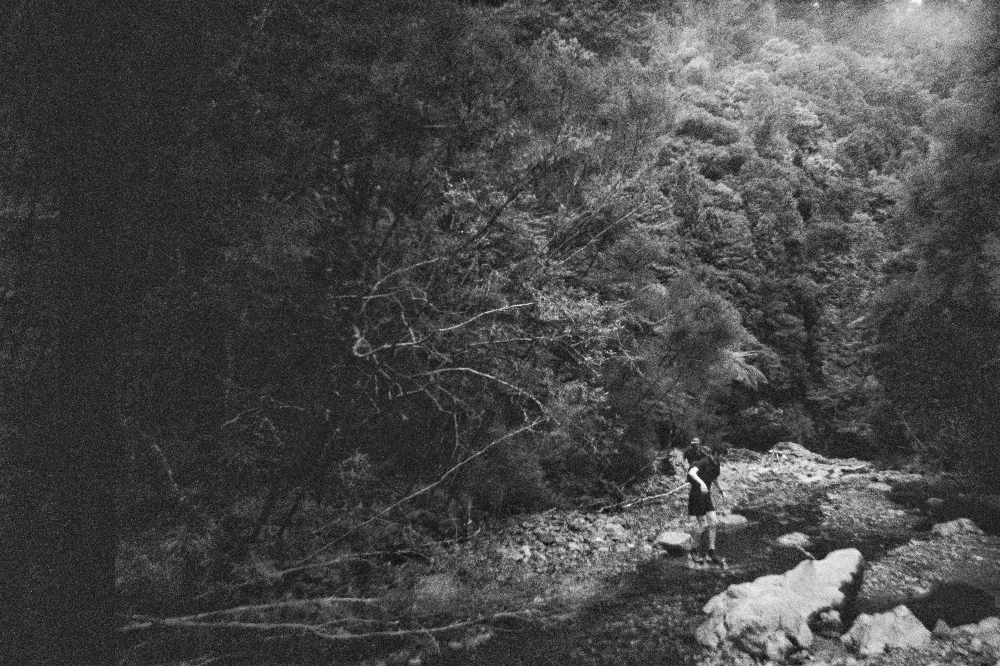

The Aorangi Undulator is a point-to-point trail race through the heart of the Aorangi Forest Park — one of New Zealand's most remote and seldom-visited wilderness areas. Expect relentless undulations.
A WREC'kd event, proudly put on by the Wilderness Running and Endurance Collective Inc.
| #1 | Starting at Mangatoetoe fishing village. Up the river to a slight undulation that drops down precipitously to Kawakawa |
| #2 | A cool knife edge, a memorable moment. Before the undulation is rather an awkward off-camber sidle through the native Ongaonga. |
| #3 | Big hill. Steep and scary drop to Washpool |
| #4 | Much like the last. If you can afford the time, slight dogleg to enjoy the views at the top. Several false undulations/peaks. Meander to Gorse Alley and the track down the Putangirua Pinnacles. |
WREC'kd is an Incorporated Society in Aotearoa that promotes endurance and adventure running activities in New Zealand's hills and mountains. We put on events for our members, and collaborate with others doing like-minded things.
wreckd.runs.nz